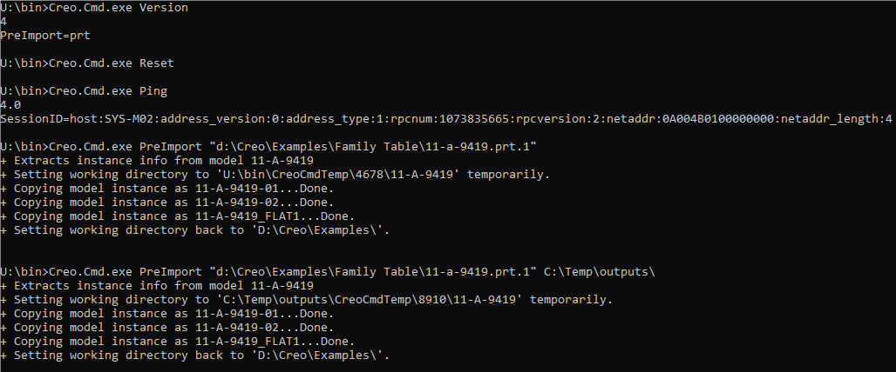

Following Creo commands are currently supported.
Version - Returns this tool version and supported file extensions (.prt). This is used by Praxis in picking the appropriate pre-import tool for a file extension
Ping – Connects with Creo Parametric and returns Creo Parametric version and the SessionID of the connection. In the emulation mode (used during testing), it simply writes out
PreImport – Extracts and outputs family instances from a given family part, optionally, to a given output directory.
Reset – Closes all Creo Parametric applications.
These commands are used by Praxis in same sequence as above to extract instances from the family – table PRT files. You can use it in interactive mode to troubleshoot if it does not work as expected from Praxis.
